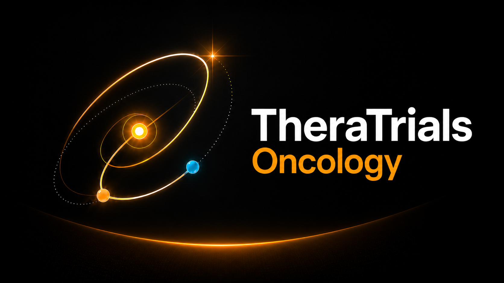

Análise objetiva e acesso aos ensaios clínicos, informações relevantes e atualizadas, além das melhores ferramentas para apoiar decisões clínicas reais em oncologia.
Melhor evidência. Melhores decisões. Melhores resultados.
Pesquisa por tumor, modalidade ou estudo individual, com atualizações semanais. Cobertura: teranóstico (próstata, NET, HCC/mCRC, ccRCC, neuroblastoma/PPGL), pulmão (NSCLC drivers, IO 1L, perioperatório, SCLC), mama (HER2+, HR+/HER2-, TNBC, BRCA-mut, imagem molecular) e uro-oncologia (ccRCC IO+TKI, RCC adjuvante e não-clear, urotelial avançado e perioperatório/NMIBC). Cada linha leva a uma ficha com mais de 30 campos.
Tracker alimentado diretamente pela API v2 do ClinicalTrials.gov com atualização mensal automática. Filtre por isótopo, alvo molecular, fase, neoplasia, sponsor e presença no Brasil.
Ensaios clínicos em oncologia recrutando agora no Brasil. Belo Horizonte como localidade inicial — em expansão. Para médicos, pesquisadores e pacientes encaminhados por especialistas.
Cada radiofármaco com cronologia, mecanismo molecular ilustrado, esquema terapêutico padrão, ensaios pivotais, dosimetria por órgão, perfil de toxicidade e perspectivas futuras.
Sistemas de classificação e critérios de resposta para uso clínico cotidiano. Cada card abre um modal completo com tabelas, exemplos e referências — sem sair da página.
426 ensaios clínicos curados em 39 categorias · pipeline global de radioligantes via ClinicalTrials.gov · 59 ensaios clínicos ativos no Brasil · 7 dossiês de radiofármaco · 9 grupos de critérios oncológicos · AJCC 8ª ed., CTCAE v6.0, BCLC 2026 · hyperlinks diretos para PubMed e ClinicalTrials.gov.